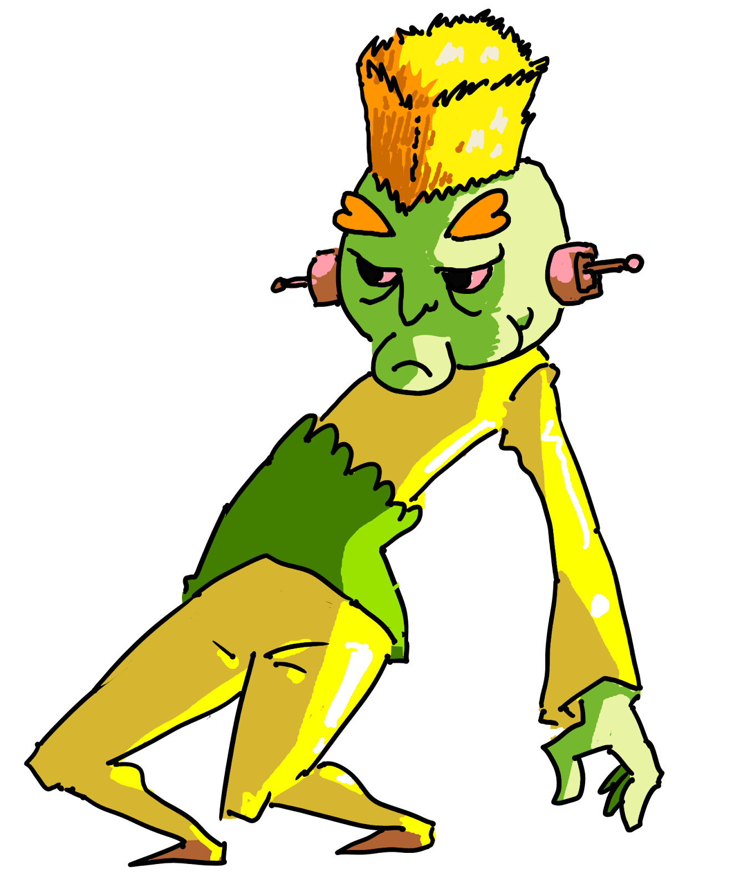

Shocklouch
Shocking Fae.

Lv 2 Fae Creature, Experience Granted: 30, Size: Medium, Speed: 25 Feet
Immune to lightning.
HP 25, Energy 10, Defense 0
Standard Actions 2, Extra Actions 1
Toughness 11, Evasion 12, Willpower 15
Tech 11, Charm 11, Detect 16, Inspect 12, Medicine 12, Knowledge 15, Stealth 11
Throat Chop
Type: Attack
Action Type: Standard, Decisive
Energy Cost: 0
Targets one creature within 5 feet of it, rolling +7 against the target's Agility Threshold. On a hit, it deals 5/10 blunt damage.
Electric Slide
Type:Magical, Attack
Action Type: Standard, Decisive
Energy Cost: 2
Shocklouch moves up to 25 feet. All creatures that were in the way of this movement are a target of this ability. Those targets make a Strength vs 17 roll. Every target that fails this roll takes 5/10 plasma damage. This ability does not count against its movement.
Shocking Touch
Type: Attack
Action Type: Standard, Decisive
Energy Cost: 1
Targets one creature within 5 feet of itself. That target makes a Toughness vs 17 roll. On failure, this deals 5/10 plasma damage to the target and the target is dazed.